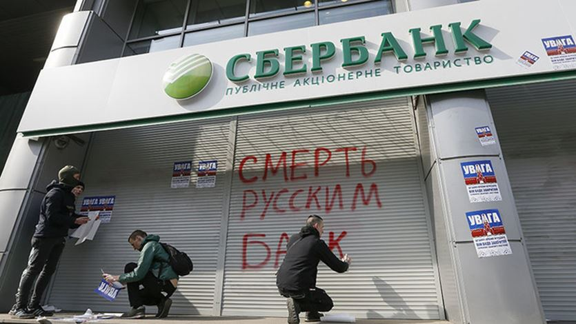
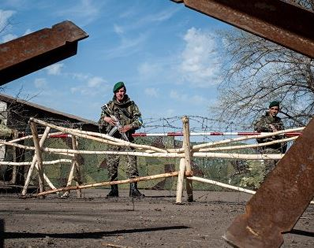
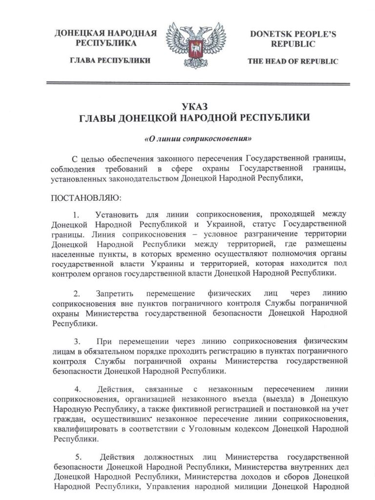
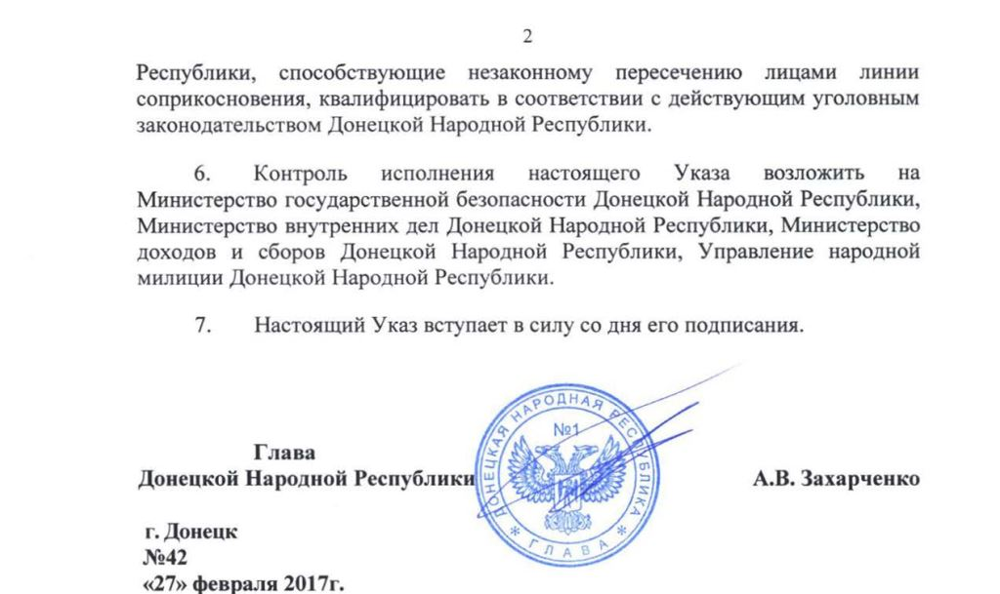
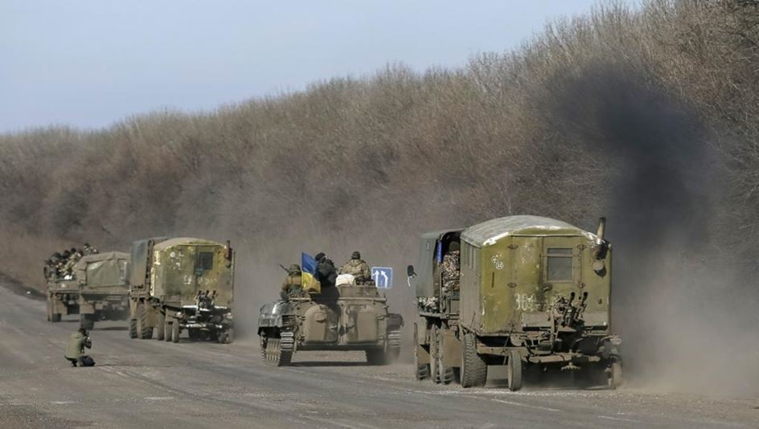
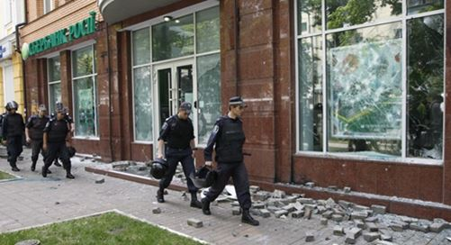

La guerre en Ukraine vient encore une fois d'arriver dans une nouvelle phase, qui cette fois risque de durer longtemps. Ce n'est pas la fin de la guerre, mais c'est la fin d'une guerre. Chaque partie vient de reconnaître l'existence d'une frontière posée par les armes, qu'il devient très difficile de déplacer. Les conséquences économiques et politiques sont en train d'être tirées de part et d'autre, le divorce russo-ukrainien est consommé.
Depuis le début du conflit, les relations économiques entre le Donbass et le reste de l'Ukraine ont permis de remplir le budget ukrainien et de faire travailler les habitants des jeunes républiques populaires. Les relations entre la Russie et l'Ukraine, si elles se réduisaient, continuaient quand même. Certes, les films russes étaient interdits, la littérature disparaissait des étals, la population devait être « dérussifiée ». Mais les relations entre les oligarques de part et d'autre et le pays « ennemi » n'étaient pas rompues, simplement tues. Les banques russes fonctionnaient en Ukraine (et représentent environ 30 % du marché bancaire), les oligarques ukrainiens gardaient des contacts avec la Russie, Rinat Leonidovytch Akhmetov a, dit-on, permis de fixer la ligne des accords de Minsk aux portes de Marioupol. L'économie devait être, dans l'idée de ces pays nouvellement convertis au dogme libérale, le lien indestructible supérieur à la politique, même à la géopolitique. Les hommes d'affaires ayant besoin d'argent et de faire de l'argent, quoi qu'il se passe. Ils découvrent qu'il existe une force supérieure. La crise ukrainienne pourra servir, pour ceux qui ouvriront les yeux, à relativiser le poids de la toute liberté du business par rapport à la politique dans la logique occidentale.
Comme nous l'avions écrit à l'époque (voir ici), la fin de la phase offensive a commencé avec le départ d’Igor Strelkov et un jeu trouble est mis en place avec les hommes de Rinat Akhmetov. Depuis un pseudo cessez-le-feu meurtrier est mis en place et des accords de paix sont deux fois négociés, permettant principalement de justifier l'adoption de sanctions contre la Russie. Le dernier moment militairement fort est, en janvier 2015, la bataille de Debaltsevo extrêmement symbolique, qui a montré la faiblesse de l'armée ukrainienne, mais également ici débute la période de l'équilibre des forces. Avec le temps, le Donbass a développé une stratégie défensive, les frontières n'ont pas beaucoup bougées, même si l'Ukraine a fait plusieurs tentatives. C'est ce que l'on a appelé « la guerre molle ».
Cette stratégie a ses limites, des deux côtés. Elle coûte cher en hommes (surtout côté ukrainien), elle joue sur le moral et coûte cher tout simplement pour des résultats difficilement convertibles en capital politique. En revanche elle a permis à l'Ukraine, ou à ses tuteurs, de gagner le temps nécessaire pour tirer les conséquences militaires et politiques qui s'imposent.
LES CONSÉQUENCES MILITAIRES
Militairement, l'équilibre des forces est tel aujourd'hui, que lancer une offensive réelle obligerait de recourir à une véritable opération militaire, ce dont l'armée ukrainienne n'est pas capable. Ce qui donc, nécessiterait une implication trop franche des « tuteurs ». Or, la communauté internationale ne peut aujourd'hui se le permettre, surtout lorsque l'image du pouvoir ukrainien
commence à se détériorer dans l'opinion publique occidentale, malgré le renforcement de la rhétorique de la menace russe.
Sur ce point, Kiev et le Donbass sont arrivés à la même conclusion, même si par des voies différentes.
En laissant le blocus du Donbass se développer, avec tout son attirail idéologique (on ne commerce pas avec l'ennemi), Porochenko a voulu donner l'impression d'avoir laissé s'exprimer « la voix populaire » et c'est pourquoi après avoir soi-disant débloqué le Donbass, le SBU a annoncé hier la fermeture des routes et des voies ferrées. L'Ukraine a pris acte de son impossibilité militaire de reprendre le Donbass, de l'interdiction politique de noyer le Donbass dans le sang, elle le raye donc de la carte. Ce que, à sa manière, Porochenko, déclare aujourd'hui : « Le blocus a détruit l'Ukraine dans le Donbass. »
La formulation est particulièrement forte, singulièrement violente. A la mesure de la situation. Acte a été pris. La réaction côté Donbass est également très forte. L'adoption de l'oukase par Alexandre Zakharchenko fixant la frontière a lancé le mouvement de stabilisation, ou bien l'a entériné.
Il est vrai que la frontière renvoie à la ligne de front, ce qui peut laisser une ouverture, ce que revendique Alexandre Zakharchenko: le combat n'est pas terminé, la frontière se déplacera avec la ligne de front de 10 ou 50 km s'il le faut, le Donbass n'a pas conclu d'armistice.
Ce qui n’a pas été fait avec Slaviansk en 2014, ne le sera pas maintenant, alors que les armées ont été « renforcées » de l'extérieur. Pas plus que l'Ukraine, le Donbass ne peut se permettre une boucherie à l'issue incertaine. La ligne est donc fixée pour un certain temps, même de part et d'autre les dirigeants peuvent le regretter.
LES CONSÉQUENCES POLITIQUES
C'est pourquoi, les conséquences ont également été tirées, de part et d'autre, sur le plan politique. Porochenko a raison, les effets du blocus sont particulièrement dangereux pour l'Ukraine. Si ... si elle avait réellement l'intention de récupérer le Donbass. Or, il est maintenant évident qu'elle n'a pas besoin de ce Donbass. Et la bienveillance des autorités ukrainiennes, au-delà des déclarations, envers le blocus du Donbass est évidente. Lorsque cela est nécessaire, les forces de l'ordre ouvrent le feu, comme le 14 mars contre le député A. Parasiuk qui vient avec une colonne de fanatiques remettre de l'huile sur le feu ... à un moment où le pouvoir a besoin de faire baisser un peu la pression, pour reprendre officiellement la main.
Ces hommes armés sont arrêtés après le poste de contrôle de Slaviansk et la question est réglée très efficacement:
Donc Porochenko et ses tuteurs ont laissé le blocus prendre de l'ampleur, pour permettre la rupture totale des liens politiques et économiques avec le Donbass ... et avec la Russie. Des signes avant-coureurs furent visibles, lorsque le pouvoir a commencé à lâcher les oligarques, qui n'étaient plus aussi utiles. Kolomoïsky qui s'est rapidement enfui et dont la banque Privatbank a été nationalisée le 18 décembre 2016, Firtash soudainement arrêté à Vienne en février 2017, quant à Akhmetov, le blocus l'a obligé à faire un choix et mettre un terme à son double jeu.
Il a donc été important de gagner du temps, pour prendre le temps de faire le ménage parmi les oligarques qui ne sont plus nécessaires et pour donner aux autres le temps de s'adapter. Par ailleurs, le blocus économique ne touche pas que les oligarques, mais aussi la population. Il était politiquement impossible de prendre cette décision immédiatement à la sortie du Maïdan - sans compter l'espoir de récupérer par une guerre éclaire le Donbass - car la chute du niveau de vie aurait été trop importante et visible, ce qui aurait discrédité la glorieuse « voie européenne ». Il a été préférable de laisser pourrir la situation.
Maintenant, le secteur bancaire russe en Ukraine est sous le feu et l'expropriation se profile. La Sberbank Ukraine a été attaquée, formellement, après que la Sberbank Russie, la maison mère, ait finalement accepté de servir les clients en possession d'un passeport de DNR ou LNR, conformément à l'oukase présidentiel à ce sujet. Si ce n'avait pour cela, un autre prétexte aurait été trouvé, le moment de l'officialisation du divorce est arrivé.
Donc, sans aucune intervention de la police, les bureaux de la Sberbank sont attaqués et murés à Kiev par le bataillon Azov, les distributeurs sont rendus inopérationnels.
Les locaux d'une autre banque russe, Alfabank, beaucoup plus importante sur le marché ukrainien, sont également attaqués:
Ainsi, les groupes extrémistes, en l'occurrence Azov, sont utilisés par le pouvoir pour justifier la politique de séparation totale d'avec la Russie. Ils mettent une ambiance devant justifier la réaction de l'Etat, réaction qui n'est pas de rétablir l'ordre public, puisque la police regarde passivement. Ce jeu est particulièrement dangereux, car Kiev peut perdre le contrôle, mais tant que ses tuteurs jouent le jeu, il y a peu de risques. Aucun nouveau Maïdan ne se profile tant que dure le « Projet Ukraine ».
En revanche, la limitation des retraits en liquide dans les banques russes est fondée et la Banque centrale demande l'interdiction pour les filiales ukrainiennes de sortir l'argent du pays et de le rapatrier vers la maison mère en Russie. Ainsi, lorsque ces banques seront nationalisées, il n'y aura pas de problèmes particuliers pour le système bancaire ukrainien : les fonds auront été bloqués à l'intérieur du pays et le pouvoir et les oligarques récupèreront les locaux et les parts de marché.
Cette constatation de la nécessité de récupérer le contrôle sur le business a été également faite par le Donbass, ce que l'on a pu voir avec la mise sous administration provisoire des entreprises ukrainiennes, qui doivent désormais reverser leurs impôts dans le budget local.
Sur le plan de la politique économique, le blocus a pleinement joué son rôle de détonateur.
Par ailleurs, la population a été préparée à la rupture totale avec la Russie par la mise en place de la politique de décommunisation qui est en fait une politique de dérussification. Il faut maintenant totalement bloquer les populations et les liens entre elles, en attendant la prochaine génération. Celle qui est actuellement à l'école et subie un reformatage total. De cette manière, un processus irréversible pourra être lancé, s'il n'est pas interrompu rapidement: même si l'Ukraine ne considèrera plus la Russie, dans 20 ou 30 ans, comme un pays ennemi, parce que le temps aura passé, ce ne sera non plus un pays frère, mais un voisin, un étranger. Peut-être sympathique, peut-être antipathique, mais dans tous les cas autre. La rupture de deux peuples qui proviennent de la même source, de deux pays à l'histoire imbriquée aura été consommée dans cette guerre.
QUID DU DONBASS ?
Et reste ouverte la question de savoir ce qu'il adviendra du Donbass. Les accords de Minsk ont bloqué l'avancée des combattants et finalement seulement un petit bout de territoire a pu être préservé du coup d'état du Maïdan, qui est bien loin de Novorossia, dont l'idée a été effleurée, bien loin même des frontières des régions ukrainiennes de Donetsk et Lugansk. Ce territoire est incapable de vivre de manière autonome. Soit il constitue une partie, plus ou moins autonome, de l'Ukraine, soit la Russie doit le prendre sous tutelle. Or, le retour dans l'Ukraine est aujourd'hui devenu quasiment impossible. La Russie devra prendre une décision, dont géopolitiquement elle se serait bien passée, peut-être, et qu'elle a tenté de ne pas avoir à prendre grâce aux accords de Minsk. Ces accords morts nés sont définitivement enterrés et maintenant il faudra assumer leurs conséquences.
Partager cette page